12 Color Theory
Load Packages:
library(palmerpenguins)
library(patchwork)
library(RColorBrewer)
library(colorspace)
library(viridis)
library(tidyverse)Set Theme:
theme_set(theme_classic() +
theme(plot.title = element_text(size = 18,
face = "bold",
hjust = 0.5),
plot.subtitle = element_text(size = 10,
color = "grey50",
face = "bold",
hjust = 0.5,
margin = margin(b = 0.2,
unit = "inch")),
plot.tag = element_text(face = "bold"),
plot.caption = element_text(hjust = 0,
face = 'italic'),
axis.title.x = element_text(size = 16,
face = "bold",
margin = margin(t = 0.2,
unit = "inch")),
axis.title.y = element_text(size = 16,
face = "bold",
margin = margin(r = 0.2,
unit = "inch")),
axis.text = element_text(face = "bold",
color = "black",
size = 12)))At this point, you know why it is important to visualize your data, several types of graphs to use to create visualizations of different relationships and comparisons within your data, and how to customize some of the elements in those graphs. Changes to the specific type of graph you use, or its title and axes labels, are overt ways to impact the effectiveness of your visualization. However, there are other things that, while subtle, have a very significant impact as well.
Visualizations are composed of different geometric shapes, lines, edges, contours, colors, etc. With this in mind, it is important to consider different aspects of visual perception and how they affect the way your graph will be perceived by a viewer. This final part of the section on Visualizations covers color and design principles. These are often overlooked when considering how to make an effective visualization, but very important!
The following graphs will serve as examples used throughout.
Note: these are not great visualizations, but will be useful to illustrate some different concepts. In particular, a line plot should generally ONLY be used when there is discrete/ordered data on the x-axis. It is used here with 2 continuous variables just to help demonstrate different color principles.
plot_bar = penguins %>%
ggplot(aes(y = body_mass_g, x = island,
fill = island)) +
stat_summary(fun = "mean", geom = "bar") +
scale_y_continuous(expand = c(0,0))
plot_bar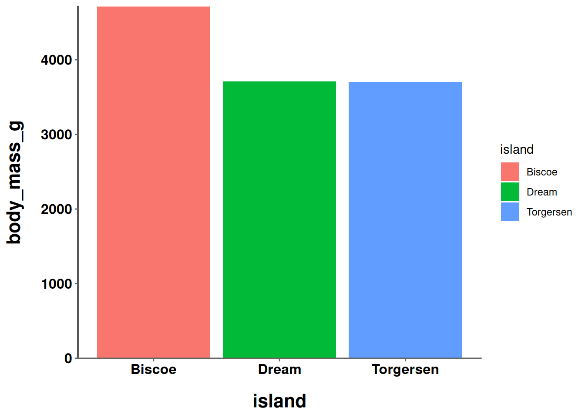
plot_jitter = penguins %>%
ggplot(aes(y = body_mass_g, x = island)) +
geom_jitter(height = 0, width = 0.2,
size = 2, alpha = 0.5,
aes(color = island)) +
stat_summary(fun.data = "mean_se",
geom = "pointrange",
size = 0.5)
plot_jitter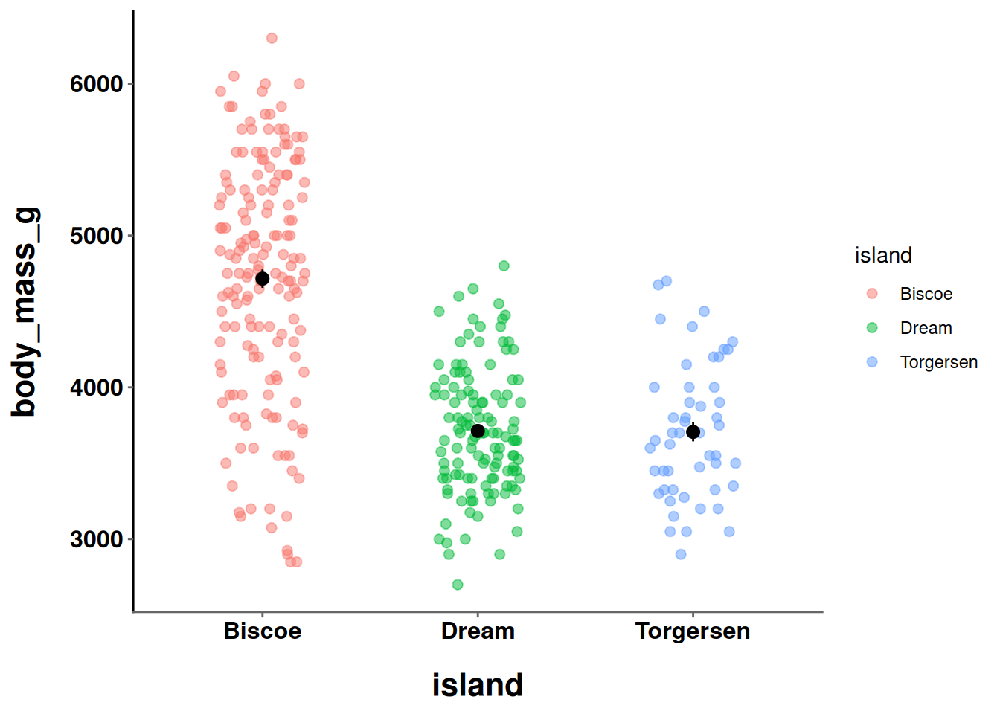
plot_line = penguins %>%
ggplot(aes(y = body_mass_g, x = bill_depth_mm, color = bill_depth_mm)) +
stat_summary(fun = "mean", geom = "point", size = 2) +
stat_summary(fun = "mean", geom = "line", size = 1)
plot_line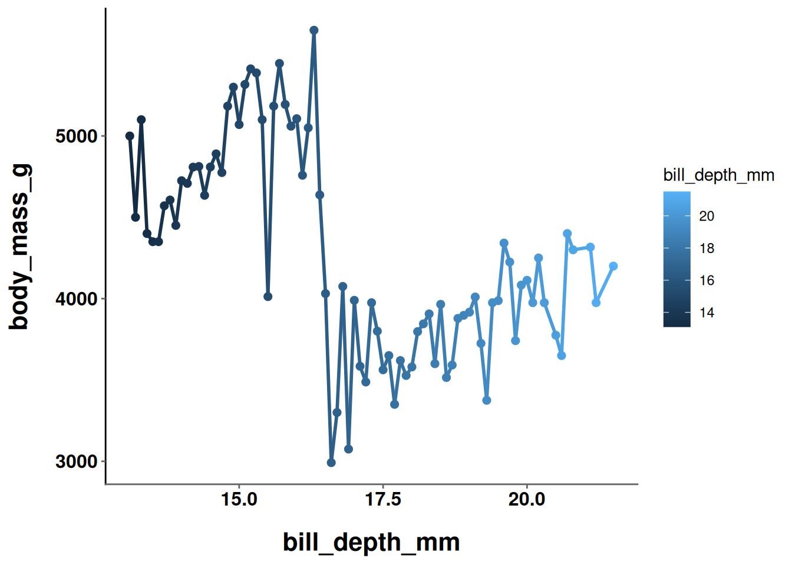
plot_hex = penguins %>%
ggplot(aes(y = body_mass_g,
x = bill_depth_mm,
z = flipper_length_mm)) +
stat_summary_2d() +
labs(fill = "Flipper Length")
plot_hex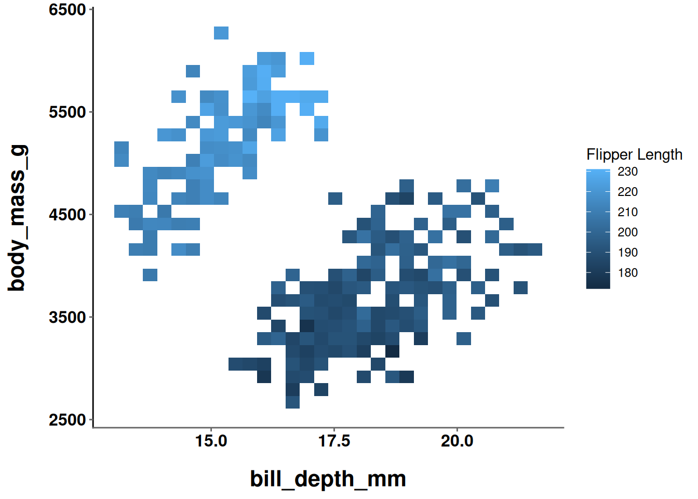
In all of the visualizations you have created thus far the colors were either automatically chosen by R or manually, but arbitrarily, set. Color choices, like all aspects of your visualization, should be made intentionally and purposefully. What, then, are the things you should consider and factor into your decision making process?
12.1 Categorical
When visualizing categorical/discrete data, color is used as a tool to help a viewer easily distinguish different groups, levels, or categories. Importantly, it is most often the case that these groups, levels, or categories, do not have an inherent order. For example, different political parties, Hogwarts houses, UCSD colleges, pokemon types, etc. These are distinct groups, but do not have an inherent order (despite some subjective opinions…).
In such instances you use a qualitative color scale, which contains a specific set of perceptually distinct but equivalently different colors. The set of colors does not convey any particular ordering or salience of particular colors compared to the rest.
To change the color scale and/or palette used in your visualization, you will use another scale_*_manual() command. The asterisk gets replaced by what aesthetic you have mapped, fill or color. The main argument here is values, which expects a vector of color names/codes to use. I’ve used literal names here, but you could also use hex codes if you’d prefer.
plot_bar +
scale_fill_manual(values = c("cyan", "lightgreen", "orange4"))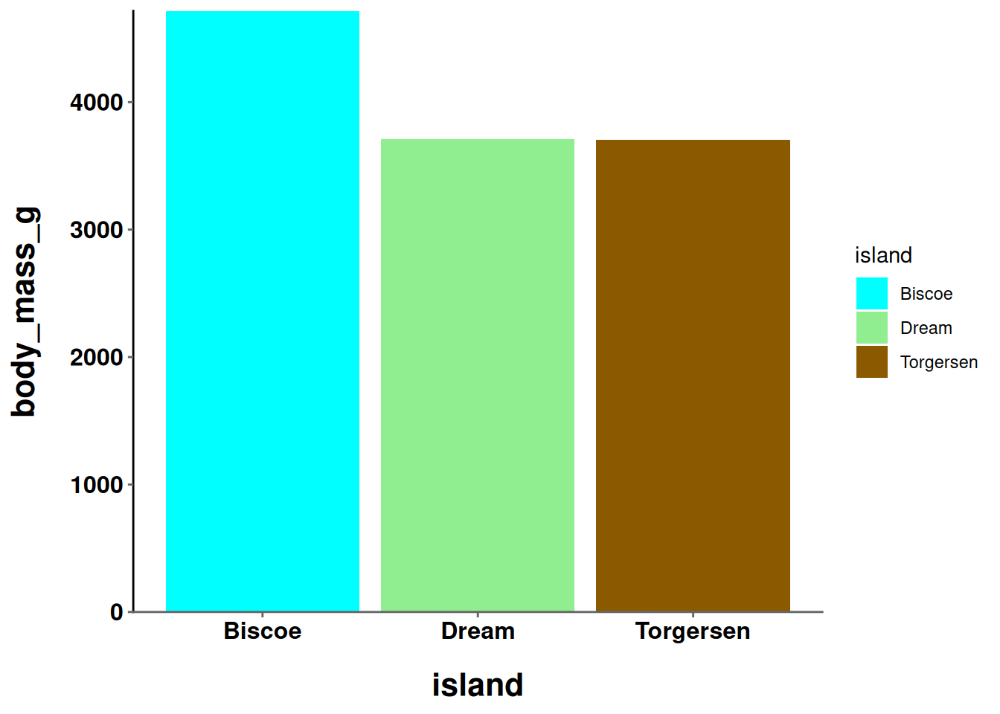
plot_jitter +
scale_color_manual(values = c("magenta", "mediumpurple1",
"lightskyblue"))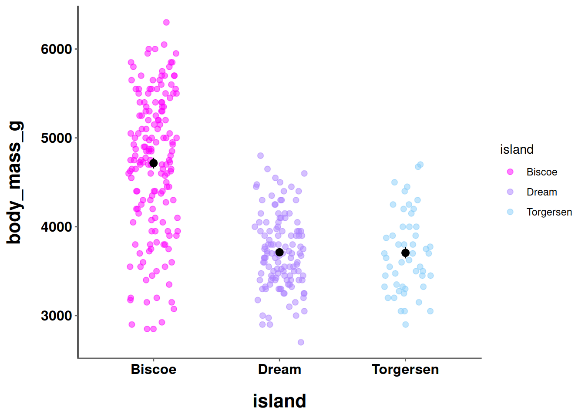
You can also specify which level of the mapped variable is associated with each specific color:
plot_bar +
scale_fill_manual(values = c("Torgersen" = "cyan",
"Biscoe" = "lightgreen",
"Dream" = "orange4"))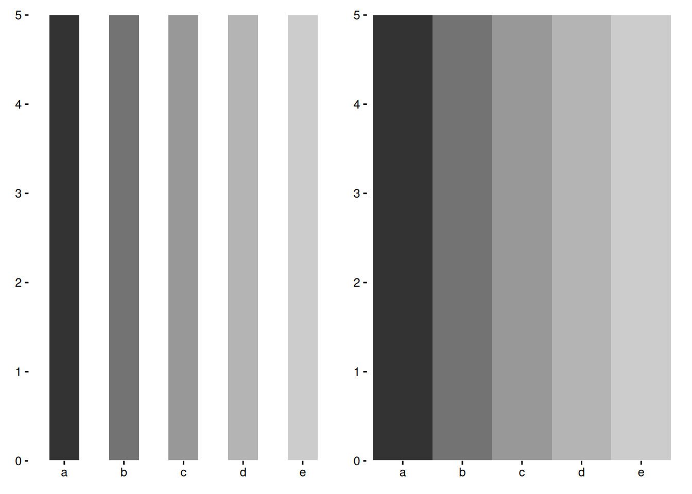
plot_jitter +
scale_color_manual(values = c("Torgersen" = "magenta",
"Biscoe" = "mediumpurple1",
"Dream" = "lightskyblue"))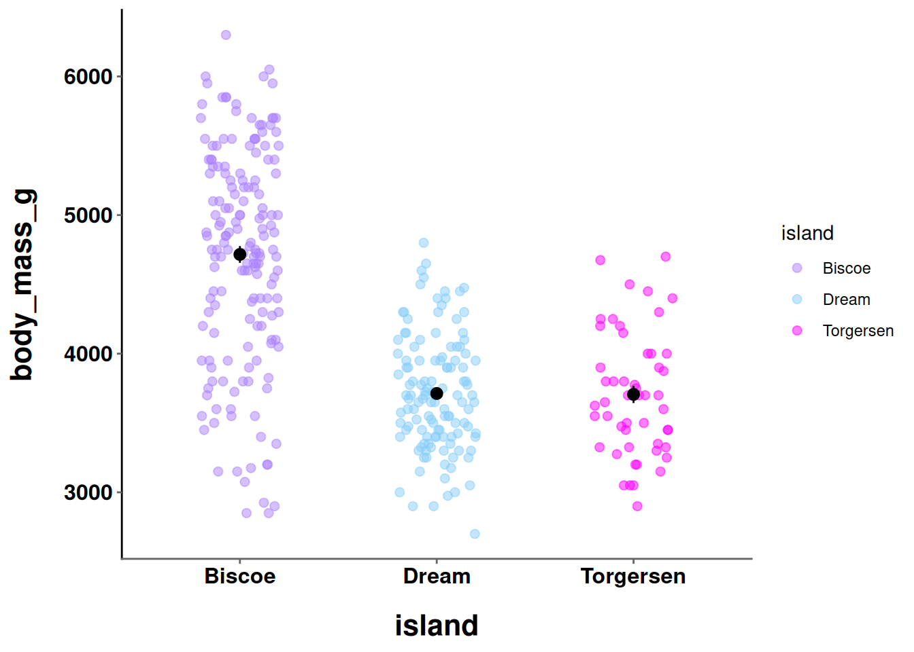
Where possible, you should choose colors that will be intrinsically informative and intuitive. While the colors in the second graph above are pretty, they are arbitrary. The colors in the first, on the other hand, may be informative. Biscoe might be a more water-based island, while Dream might have more greenery and Torgersen more flat earth terrain. It is easy to think of other examples where this could be useful. If you were visualizing something about Hogwarts houses, you would probably want to use a red color for Gryffindor and a green color for Slytherin. This also cuts down on the need for a viewer to consult the legend to parse your visualization.
It is important to consider what kind of latent information your color choices may be communicating, especially when unintentional!
12.2 Continuous
12.2.1 Sequential
When visualizing continuous data, color is used as a tool to represent the actual data values. Here, there is an ordering to the values. For example, a score of 80 on an exam is higher than a score of 70, a $40k salary is more than a $35k salary, etc.
In such instances you use a sequential color scale, or color gradient,
which contains a sequence of colors. Different colors in this sequence convey both which of two values is larger and additionally the relative distance between those two values. This, again, highlights the necessity for perceptual uniformity between adjacent colors in this scale. The function for this type of color scale in R is scale_*_gradient(). The main arguments needed are a low and high value over which to define the gradient.
A sequential scale can be defined over a single hue (the default is dark to light blue):
plot_line +
scale_color_gradient()
plot_hex +
scale_fill_gradient(low = "darkgreen", high = "palegreen")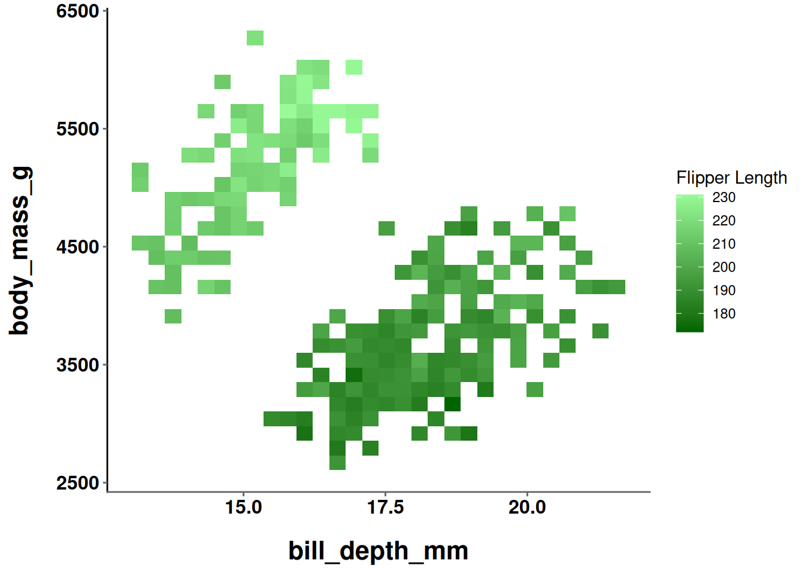
or multiple hues:
plot_line +
scale_color_gradient(low = "lavender", high = "goldenrod4")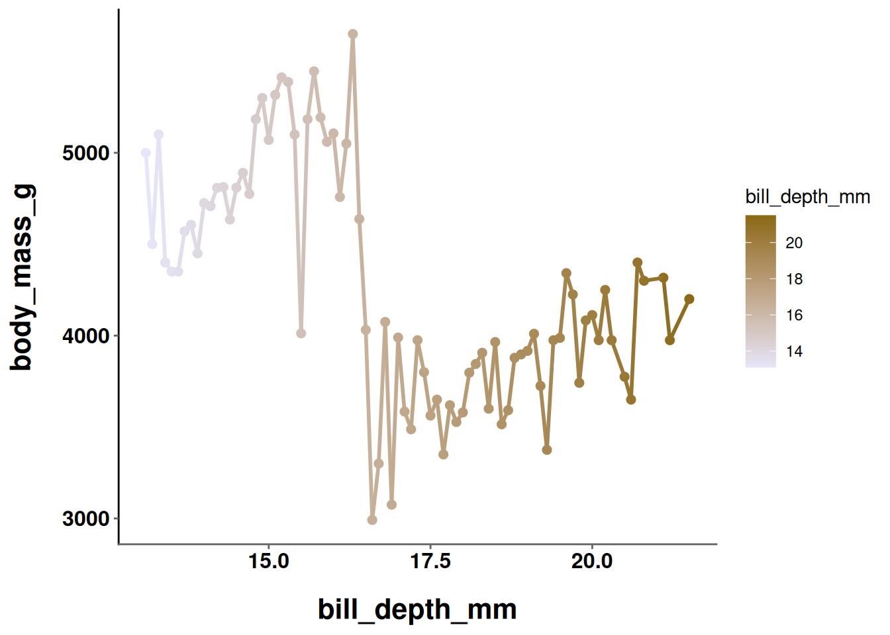
plot_hex +
scale_fill_gradient(low = "red", high = "yellow")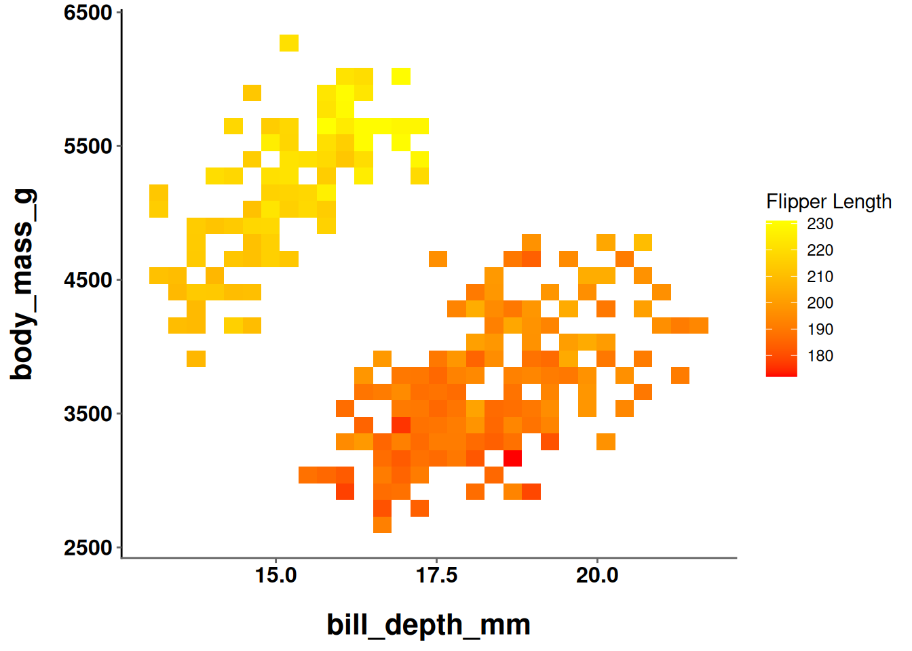
Remember, a sequential color gradient should create the perception that values have a meaningful sequential order. One way to help with this is keep a constant hue and only vary the chrominance and luminance. Another way is to only use gradients that are readily observed in the natural world (e.g., light yellow to dark red, dark brown to green, etc.)
When creating a scale based on multiple hues, you are not limited to just choosing a low and high end value. Using scale_*_gradientn() allows you to create a gradient over several colors. The argument colors takes a vector of colors over which to linearly create a gradient.
plot_line +
scale_color_gradientn(colors = c("red", "orange", "yellow",
"green", "blue"))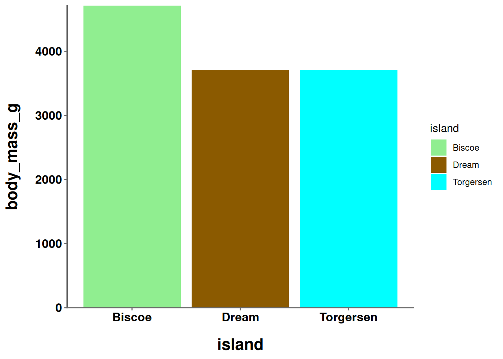
plot_hex +
scale_fill_gradientn(colors = c("red", "brown", "yellow"))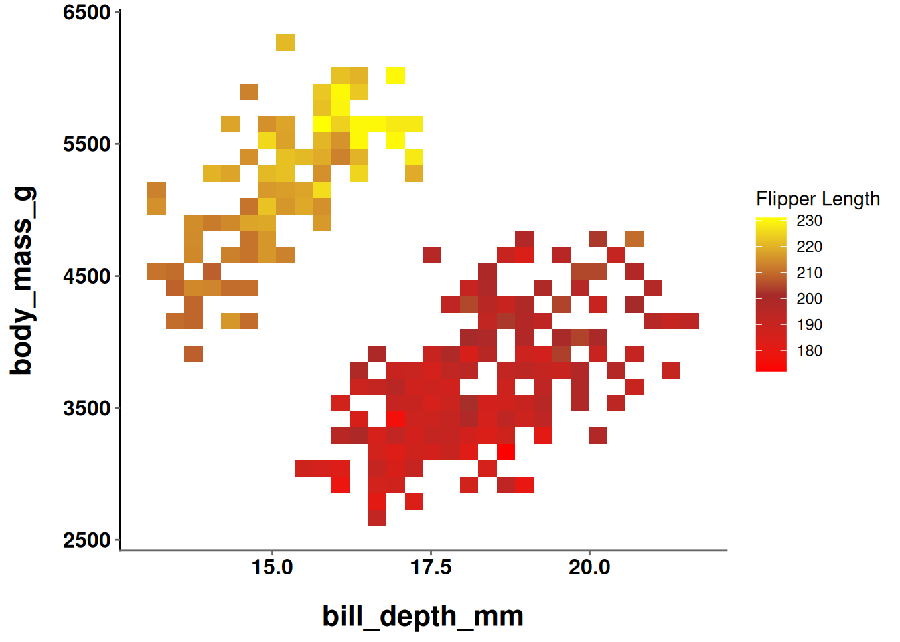
These are obviously terrible color schemes, and are just for illustrative purposes. Using scale_*_gradientn() can give you a bit more control over the exact gradient being used.
12.2.2 Divergent
Sometimes you may have data with a neutral point or true zero, where deviations in either direction from this midpoint become meaningful. For example, data that contains both positive and negative values, or visualizing deviations from the mean. In such instances, you would use a divergent scale. A divergent color scale is essentially two sequential scales appended to a single common point (0, the mean, etc.). Thus, the scale needs to make it readily apparent both in which direction the value is deviating and the magnitude of the deviation. It is important for the color gradients on both halves of the scale to be perceptually uniform and equivalent or the perceived magnitude of a value would be an artifact of how you defined the gradient. E.g., values above the neutral point might seem to have a large magnitude of change if the color deviations are more stark than those below it.
To create a divergent color scale, you use scale_*_gradient2() – which admittedly is a little counterintuitive since you define 3 values and not 2 (and hopefully this little inconsistency will now serve as a way to remember this :P). In addition to the low and high values that you specified above, you also need to specify a mid color. Additionally, you may want to specify what value in your data should serve as the midpoint between the two scales. This value is 0 by default.
plot_hex +
scale_fill_gradient2(low = "red", mid = "grey90", high = "yellow")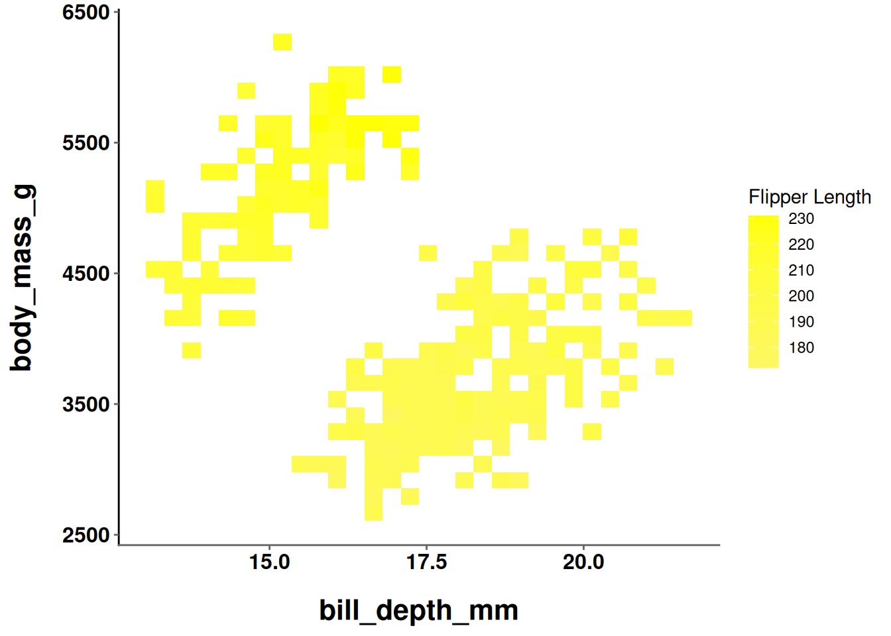
In the graph above, the midpoint argument was not set. The default value of 0 was used, but all values in the data fall above it!
plot_hex +
scale_fill_gradient2(low = "red", mid = "grey90", high = "yellow",
midpoint = mean(penguins$flipper_length_mm, na.rm = TRUE))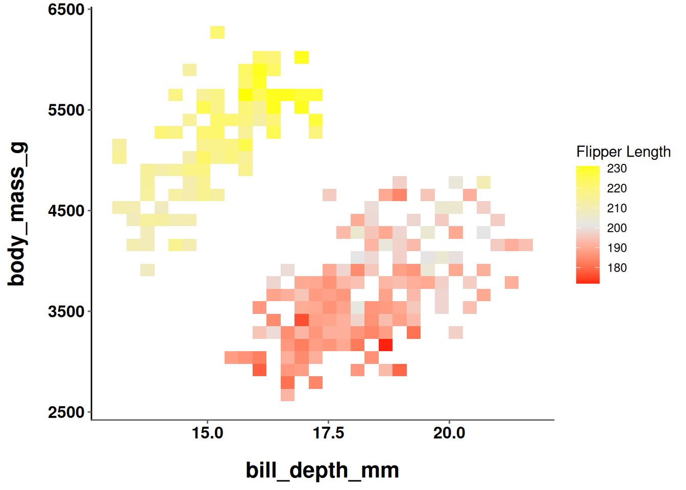
Here, the midpoint is set to the mean value for flipper_length_mm. You should note that this is not a particularly good scale to use. The midpoint appears to be at about 200, so values at 220 and 180 are equally different from the midpoint. However, because the low value (red) is darker than the high value (yellow), the 180 values are perceived to be more different.
12.3 Pre-defined Color Scales
As you may have realized through the practice exercises, it can be quite difficult to create a good color scale from scratch that is both perceptually uniform and aesthetically pleasing. Fortunately, R has a number of pre-defined color scales that can be used. Some of these are built-in to base R and ggplot, and others can be added from other packages and libraries.
12.3.1 Built-in
Base R comes with the following color scales:
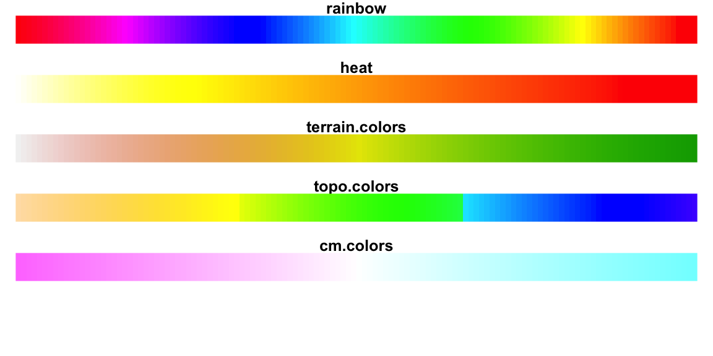
Each color scale can be used as a function that takes an argument n for the number of colors to sample from that color scale.
rainbow(n)
heat.colors(n)
terrain.colors(n)
topo.colors(n)
cm.colors(n)This will return those colors’ hexcodes, and can be passed in to any argument expecting a vector of color names:
plot_hex +
scale_fill_gradientn(colors = terrain.colors(4))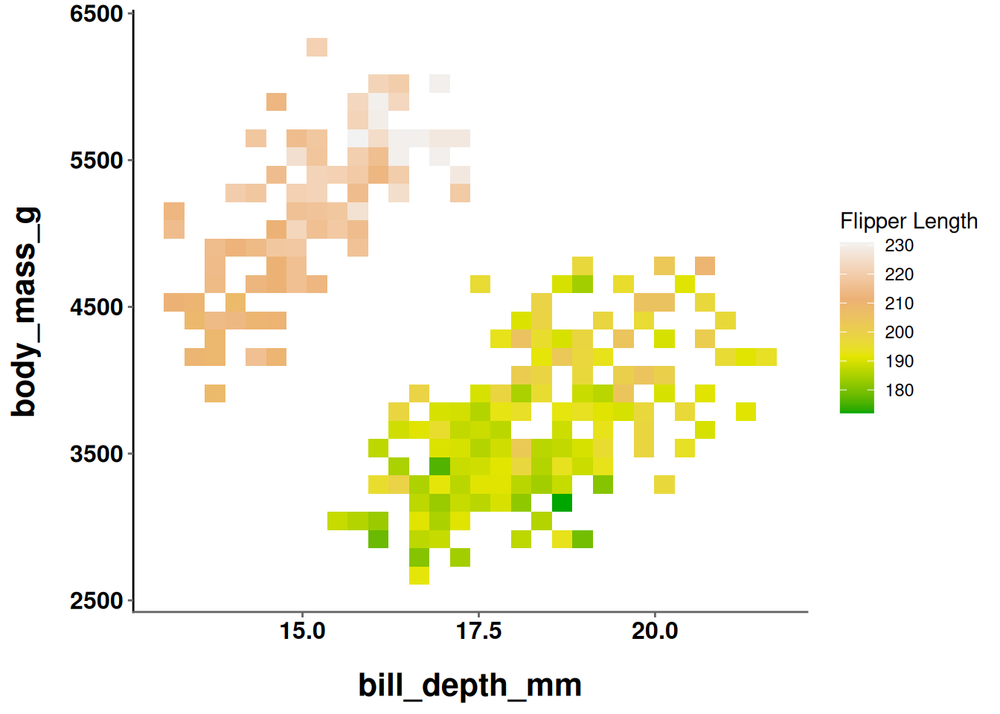
plot_jitter +
scale_color_manual(values = heat.colors(3))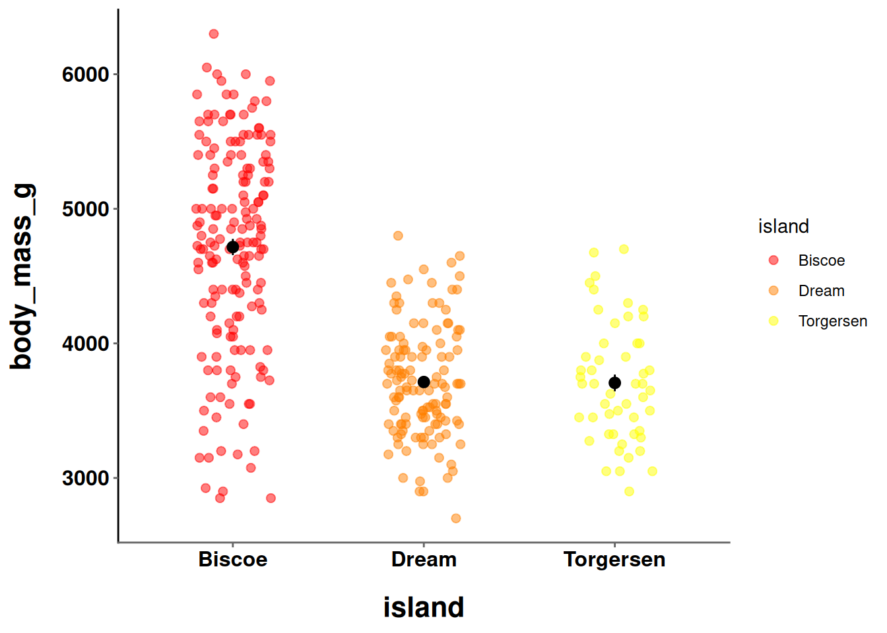
12.3.2 Brewer
By way of installing tidyverse and ggplot2, you also have access to RColorBrewer, which contains great pre-defined color scales and palettes. Info on all the palettes is stored in a dataframe called brewer.pal.info.
brewer.pal.info
#> maxcolors category colorblind
#> BrBG 11 div TRUE
#> PiYG 11 div TRUE
#> PRGn 11 div TRUE
#> PuOr 11 div TRUE
#> RdBu 11 div TRUE
#> RdGy 11 div FALSE
#> RdYlBu 11 div TRUE
#> RdYlGn 11 div FALSE
#> Spectral 11 div FALSE
#> Accent 8 qual FALSE
#> Dark2 8 qual TRUE
#> Paired 12 qual TRUE
#> Pastel1 9 qual FALSE
#> Pastel2 8 qual FALSE
#> Set1 9 qual FALSE
#> Set2 8 qual TRUE
#> Set3 12 qual FALSE
#> Blues 9 seq TRUE
#> BuGn 9 seq TRUE
#> BuPu 9 seq TRUE
#> GnBu 9 seq TRUE
#> Greens 9 seq TRUE
#> Greys 9 seq TRUE
#> Oranges 9 seq TRUE
#> OrRd 9 seq TRUE
#> PuBu 9 seq TRUE
#> PuBuGn 9 seq TRUE
#> PuRd 9 seq TRUE
#> Purples 9 seq TRUE
#> RdPu 9 seq TRUE
#> Reds 9 seq TRUE
#> YlGn 9 seq TRUE
#> YlGnBu 9 seq TRUE
#> YlOrBr 9 seq TRUE
#> YlOrRd 9 seq TRUEPalettes are grouped into 3 distinct categories:
- Qualitative
- Sequential
- Divergent
Just like the 3 types of color scales outlined above! You can quickly visualize all the palettes with display.brewer.all() and specifying which type you want to see:
display.brewer.all(colorblindFriendly = TRUE, type = "qual")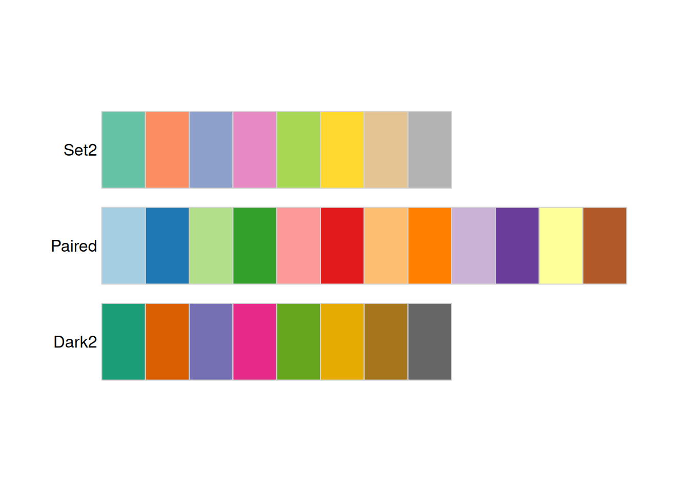
display.brewer.all(colorblindFriendly = TRUE, type = "seq")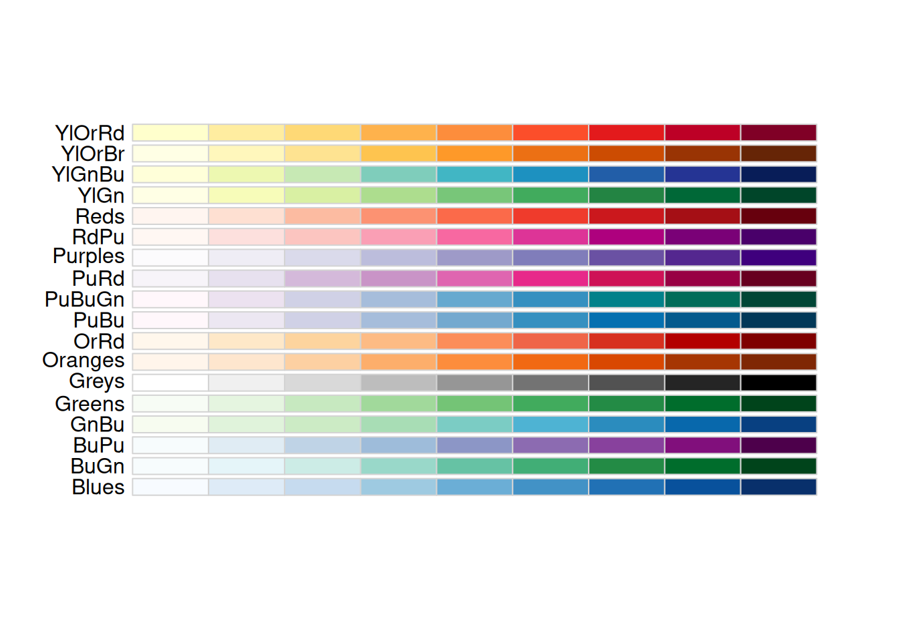
display.brewer.all(colorblindFriendly = TRUE, type = "div")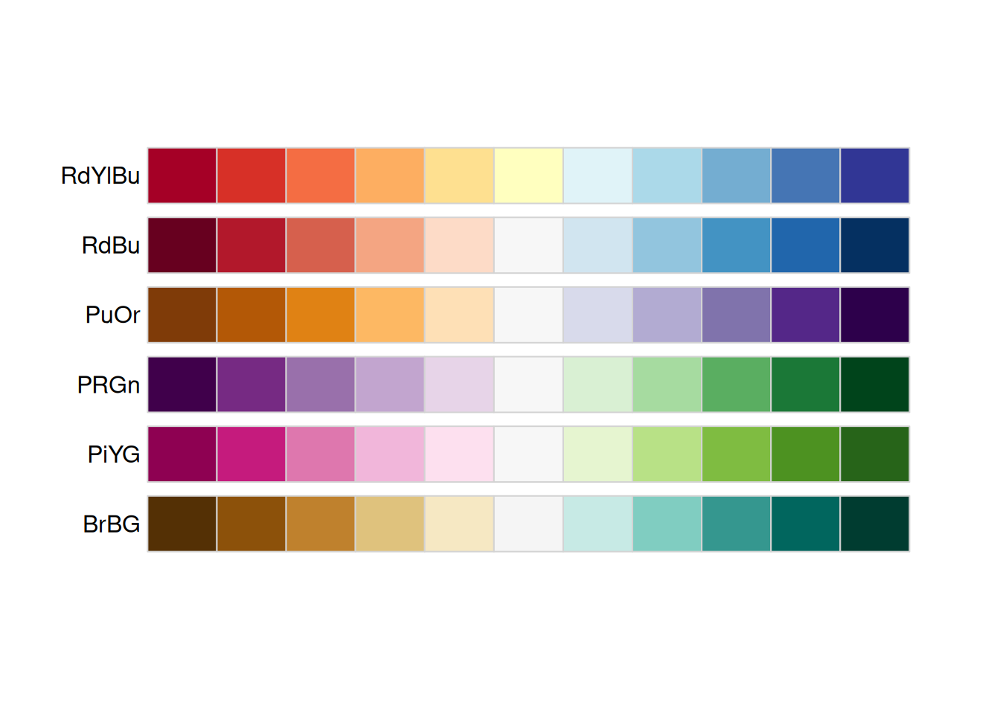
Note that the colorblindFriendly argument was also used and set to TRUE. This filters the results to only show palettes that are colorblind friendly. There is almost no reason to ever not use a colorblind friendly palette.
Each palette has a maximum number of colors in the scale, but you might be curious about how the palette would look with varying numbers of colors. If you only have 4 levels to your variable, maybe one scale will accommodate that number better than another. You can see the exact colors used for a given palette and number of colors using display.brewer.pal().
display.brewer.pal(n = 4, name = 'Reds')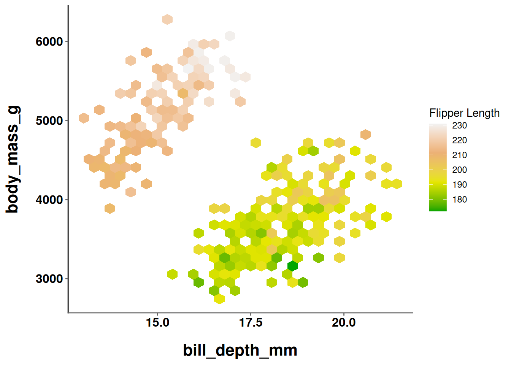
display.brewer.pal(n = 8, name = 'Reds')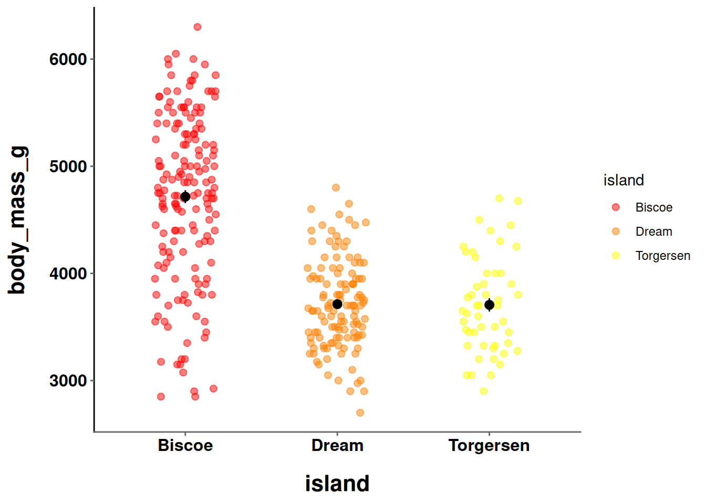
The specific values of those colors can be identified with brewer.pal().
brewer.pal(n = 4, name = 'Reds')
#> [1] "#FEE5D9" "#FCAE91" "#FB6A4A" "#CB181D"“Okay, cool, I get it, these are AWESOME. How do I USE them?!”
Fair question! The answer is: very easily! ggplot2 has built in functions to easily adopt the brewer color palettes. You can do so using scale_*_brewer() for categorical data and scale_*_distiller() for continuous. All you have to do is pass in the name of the specific palette.
plot_hex +
scale_fill_distiller(palette = "GnBu")
plot_line +
scale_color_distiller(palette = "RdPu")
plot_jitter +
scale_color_brewer(palette = "Dark2")
plot_bar +
scale_fill_brewer(palette = "Set2")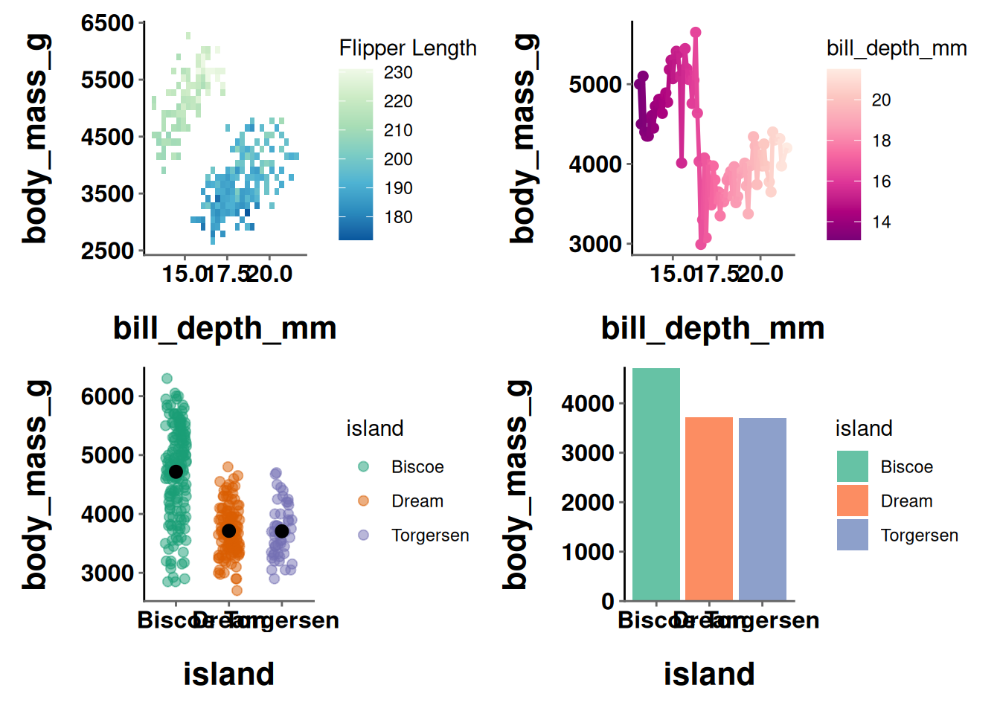
As a side note, since you can use brewer.pal() to get a vector of color values from a specific palette, that can also be used the same way you were setting colors manually above.
plot_hex +
scale_fill_gradientn(colors = brewer.pal(n = 4, name = 'BuGn'))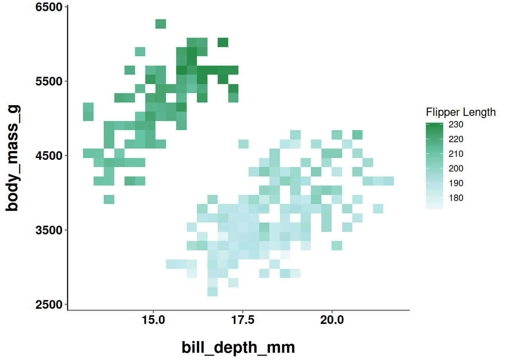
plot_jitter +
scale_color_manual(values = brewer.pal(n = 3, name = 'Set2'))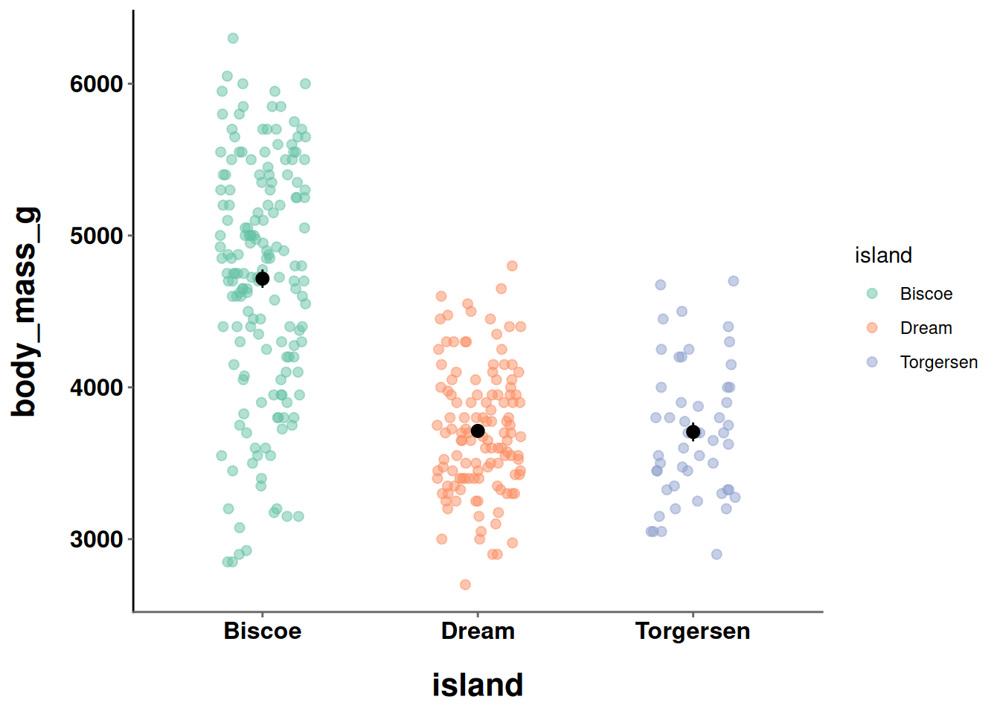
You may sometimes encounter an error like this:
Error: Continuous value supplied to discrete scale
This is another one of the errors from R that are actually pretty helpful and intuitive. This most often means the function you are using does not map on to the type of data it is being applied to. In most instances like this, you just need to change the function you are using (e.g., brewer vs distiller).
However, while using the wrong function will throw you an error, using an inappropriate color scale may NOT give you an error. For example:
plot_jitter +
scale_color_brewer(palette = "Oranges")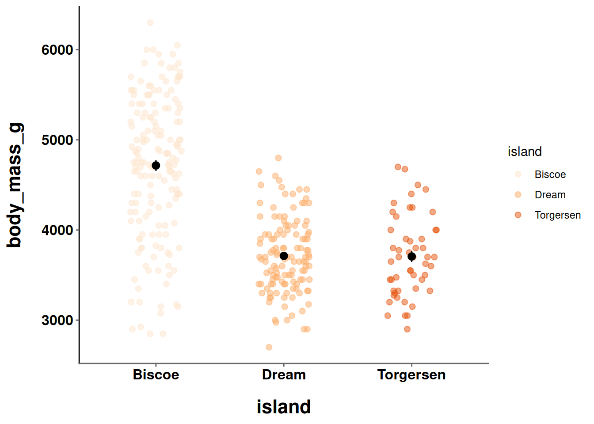
plot_hex +
scale_fill_distiller(palette = "Set3")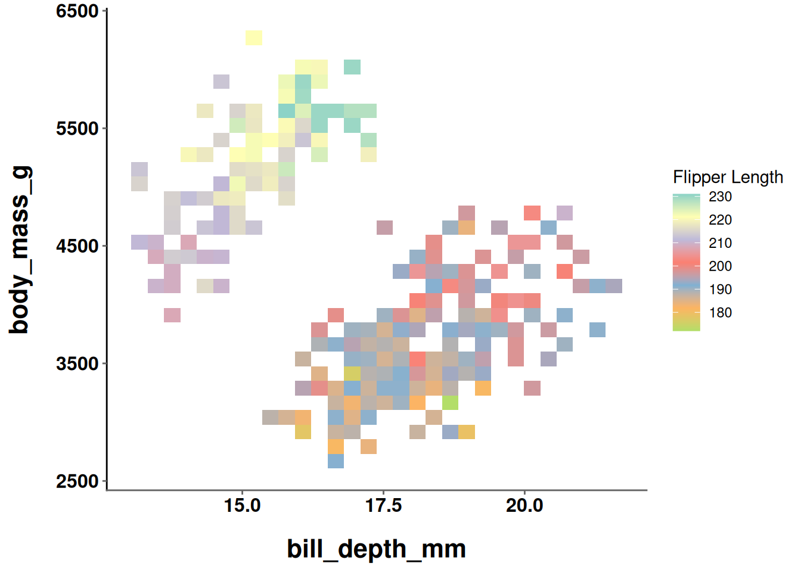
Thus, it is important to double check you are using the right type of scale for your data!
12.3.3 Viridis
The issue of colorblind friendly palettes was mentioned above and how there is almost no good reason to ever not use a colorblind friendly palette. It can be hard to determine what palettes are colorblind friendly. There are some good resources to help you see how your visualization would look in different forms of colorblindness. One of them is called cvd_emulator() from the colorspace package (more on this below). Others are available online.
An alternative to selecting a color palette and then checking to see whether it is colorblind friendly is to just choose a palette specifically designed to be interpretable and effective under a variety of different color vision types (typical and different forms of color blindness). These come from the viridis package, which was introduced earlier!
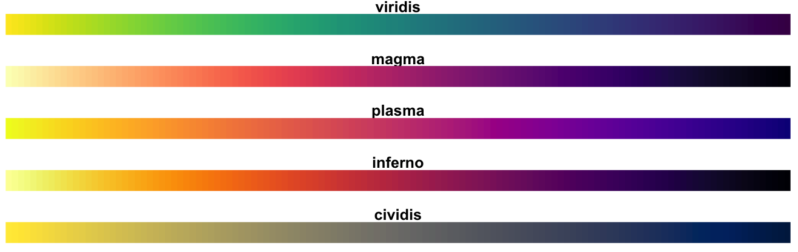
Source: viridis documentation
These palettes can be easily applied by using scale_*_viridis(). The specific palette is set with the option argument, and can be applied to categorical data by using the discrete argument
plot_bar +
scale_fill_viridis(discrete = TRUE)
plot_jitter +
scale_color_viridis(discrete = TRUE, option = "plasma")
plot_line +
scale_color_viridis(option = "inferno")
plot_hex +
scale_fill_viridis()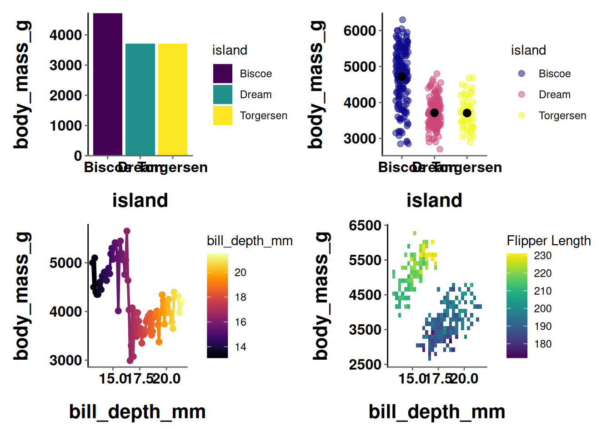
You can also generate specific color codes from these palettes in the same way you can from the base R palettes (outlined above)
12.3.4 Grey scale
For ink considerations (or if a journal required it), sometimes you may want to just use a grey scale. ggplot has a built in function to help with this for categorical data (as it is easy to do for continuous) called scale_*_grey(). The scale can be selected automatically, or you can specify the start and end values which range from 0 (dark) to 1 (light).
plot_jitter +
scale_color_grey()
plot_bar +
scale_fill_grey()
plot_bar +
scale_fill_grey(start = 0, end = 0.5)
plot_bar +
scale_fill_grey(start = 0.5, end = 0.95)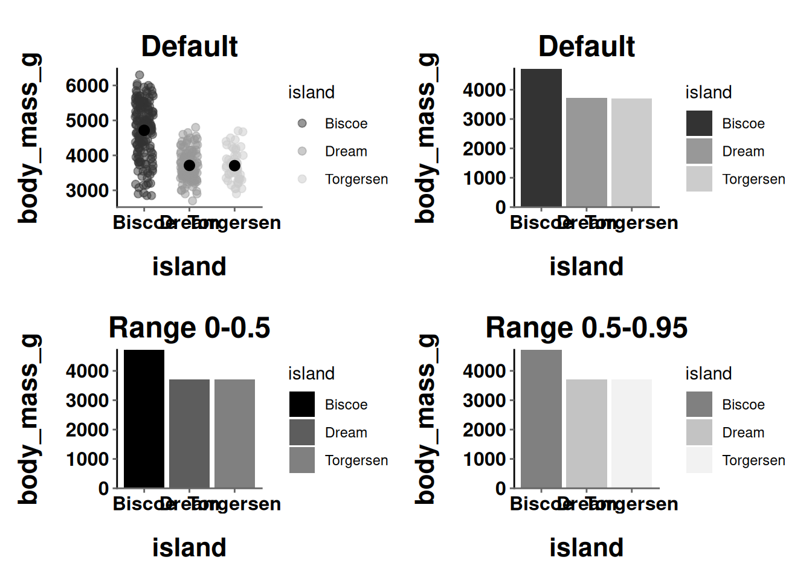
12.4 Color and Design Resources
It is outside the scope of this course to get more into design principles in general and how they can be applied to visualizations, but there are several good resources for this. Here are a few:
- Visualization Principles Cheatsheet (This is worth saving!!!)
- Kieran Healy’s book on data visualization, particularly chapter 1, covers a lot of different design principles and how they can be applied to graphs.
- Claus Wilke’s book is also great, particularly Part II.
- General Do’s and Do Not’s
Here are some general color resources:
{kind=link}
12.5 References
Stauffer, R., Mayr, G. J., Dabernig, M., & Zeileis, A. (2015). Somewhere over the rainbow: How to make effective use of colors in meteorological visualizations. Bulletin of the American Meteorological Society, 96(2), 203-216.